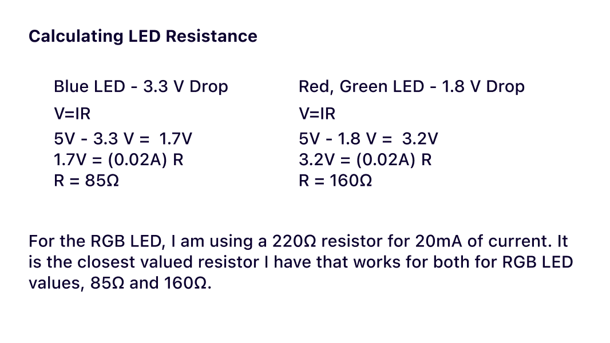

Input and Output
Assignment
For this assignment, I connected one RGB LED to a photoresistor on my breadboard. I wanted to represent the lighting of my room throughout the day. When the sun is out, I try to have no lights turned on. When the sun sets, I have a pleasant blue-lavendar bedside lamp. On this board, the photoresistor senses the brightness to control how and when the LED is turned on. The RGB LED glows in a brightness inverse to the sensed brightness.
The Schematic
Here is my schematic for the RGB LED and the photoresistor.
The Calculations

Here are my calculations for LED resistance.
Here is my calculation for the voltage divider. I am using a voltage divider to control the flow of current.
The Code
// Carol Lei, assignment 3
// *Code credit to Arduino example code, Callibration
const int R = 11; // red LED to ~pin11
const int G = 10; // red LED to ~pin10
const int B = 9; // red LED to ~pin9
int sensorValue = 0; // the sensor value
int sensorMin = 1023; // minimum sensor value
int sensorMax = 0; // maximum sensor value
void setup() {
Serial.begin(9600); // initialize serial communication at 9600 bits per second
while (millis() < 5000) { // *while millisec is less than 5000
sensorValue = analogRead(A0); // *read the value of pin A0, connected to photoresistor
if (sensorValue > sensorMax) { // *if sensor value is greater than sensor max
sensorMax = sensorValue; // *set sensor max to current sensor value
}
if (sensorValue < sensorMin) { // *if sensor value is less than sensor min
sensorMin = sensorValue; // *set sensor min to current sensor value
}
}
pinMode(R, OUTPUT); // initialize the Red LED as output
pinMode(G, OUTPUT); // initialize the Green LED as output
pinMode(B, OUTPUT); // initialize the Blue LED as output
}
void loop() {
sensorValue = analogRead(A0); // read the value of pin A0, connected to photoresistor
sensorValue = constrain(sensorValue, sensorMin, sensorMax); // *constrain the sensor value to sensor min and sensor max in case sensor value is outside range
Serial.print("Sensed brightness = "); // print to serial monitor brightness value
Serial.print(sensorValue); // print to serial monitor sensor value
Serial.println(); // print a new line
sensorValue = map(sensorValue, sensorMin, sensorMax, 255, 0); // map sensor value to appropriate LED value between 255 and 0, when bright LED off/dim, when dark LED bright
analogWrite(R, sensorValue/5); // write to Red LED sensor value divided by 5 (i liked this periwinkle color)
analogWrite(G, sensorValue/3); // write to Red LED sensor value divided by 3 (i liked this periwinkle color)
analogWrite(B, sensorValue); // write to Red LED sensor value (i liked this periwinkle color)
Serial.print("LED Value = "); // print to serial monitor mapped LED value
Serial.println(sensorValue); // print to serial monitor sensor value
Serial.println(); // print a new line
}
This is the code I used to develop the behavior I wanted. See the comments in the code for further explanations.
Serial Monitor Output
Here is a sample screenshot of the output text in my serial monitor.
My breadboard
Here is my breadboard with one RGB LED light and a light sensor that controls that LED.
Lights out, periwinkle time!

Turn out the lights for a pretty preiwinkle LED light!